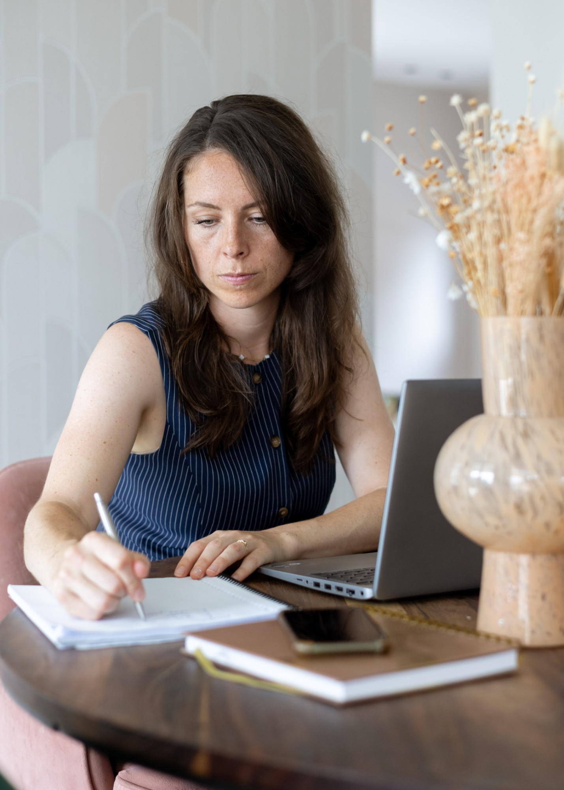
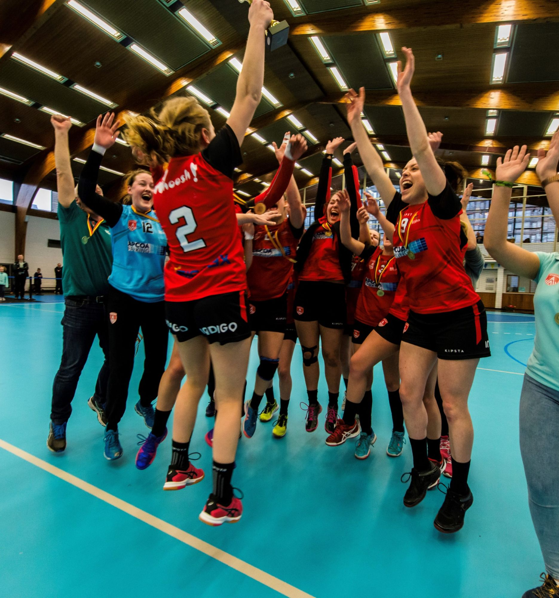

Sport én studie, parallel begeleid.
Elke topsportcarrière heeft een einde, soms gepland, soms door een blessure of deselectie. Dat is geen reden om minder te geven, wel een reden om nu al na te denken over wat daarna komt.
GoParallel werkt via twee routes: rechtstreeks met de sporter en zijn ouders, of via de school, bond of club waar de sporter traint en studeert.
De overstap
Van het voortgezet onderwijs naar mbo, hbo of wo én voor studenten die daar al studeren.
Balans
Een overzichtelijke weekplanning waarin trainen, wedstrijden en studeren naast elkaar passen.
Zelfsturing
Ontwikkel vaardigheden om zelf te leren plannen en bij te sturen wanneer het nodig is.
Ná de topsport
Bewuste keuzes voor je loopbaan, met oog op de voorbereiding voor na je (top)sportcarrière.
Twee sporen, één richting.
GoParallel biedt persoonlijke duale carrièrebegeleiding voor (top)sport-studenten die de overstap maken naar het mbo, hbo of wo én voor (top)sport-studenten die daar al studeren. Door sport, studie en persoonlijke ontwikkeling samen te brengen, ontstaat meer overzicht en wordt duidelijk welke keuzes nodig zijn om richting te geven aan de toekomst ná de (top)sportcarrière.
Onze aanpak is efficiënt en doelgericht: één geïntegreerde jaarplanning voor sport en studie die zorgt voor overzicht. Vanuit die basis stimuleren we zelfsturing en begeleiden we (top)sport-studenten bij het maken van bewuste keuzes tijdens en ná de (top)sport.
Voor (top)sport-studenten die nú presteren én bouwen aan wie ze daarna willen zijn.
Vier trainingen, twee tentamens
en een uitwedstrijd in één week.
Zo ziet de agenda van veel (top)sport-studenten eruit. Ik help je daar één planning van te maken, samen met je school en je sportclub, zodat je niet hoeft te kiezen.
Sport, studie en toekomst als één geheel
De begeleiding van (top)sport-studenten vraagt om samenhang tussen school, sportclub en thuis. GoParallel brengt deze werelden bij elkaar en versterkt daardoor de begeleiding met:
- Heldere structuur in de combinatie van sport, studie en vrije tijd.
- Een concrete, praktisch toepasbare duale planning.
- Bewuste richting in studie- en loopbaankeuzes.
- Ontwikkeling van zelfsturing en eigenaarschap.
Combinatie van coaching, planning en strategie gericht op de korte- en de lange termijn.
Eén traject voor sport, studie én toekomst.
Sport, studie en loopbaan komen samen in één doorlopend traject. Het traject is opgebouwd uit drie lagen die op elkaar voortbouwen, van langetermijnvisie tot dagelijkse regie.
Voor (top)sport-studenten die nú presteren én bouwen aan wie ze daarna willen zijn.
Het platform achter elk traject:
app. goparallel.nl
Het platform is de centrale werkplek voor (top)sport-studenten, begeleiders, docenten en sportcoaches.
Eigen weekplanning, doelen, taken en gespreksverslagen.
Inzicht in de weekplanning van gekoppelde (top)sport-studenten
Volgt de voortgang van gekoppelde (top)sport-studenten
Één systeem, drie keer winst.
Eén aanpak met directe opbrengst: een krachtige samenwerking tussen topsport‑student, ouders, school en sportclub.
De (top)sport-student krijgt overzicht en grip op zijn planning, terwijl ouders helder inzicht krijgen in de balans tussen sport en studie.
Scholen en sportclubs profiteren van betere afstemming en bieden duurzame begeleiding, waardoor prestaties en welzijn versterkt worden
- Meer rust en overzicht door één jaarplanning
- Grip op sportprogramma en studiebelasting
- Lange termijn visie op studie en loopbaan ná de sport
- Eigenaarschap over eigen toekomst